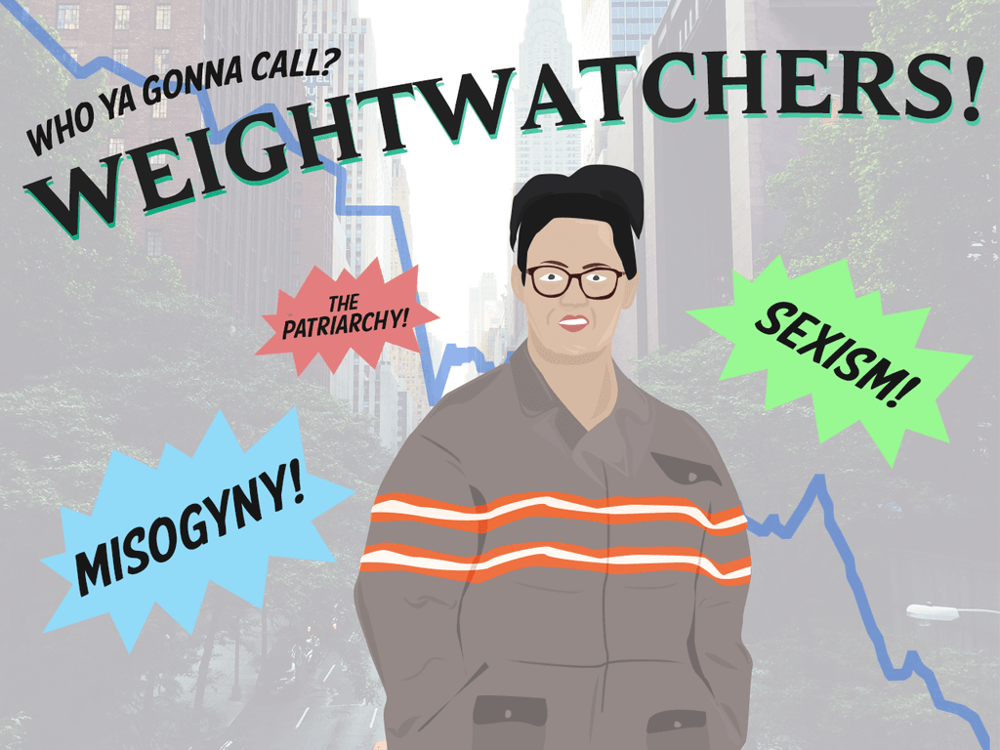

< < < Back
Feminist Ghostbusters Bombs Despite Hysterical Attacks Against Its Critics – Return Of Kings
Earlier this year, Return Of Kings introduced you to the terrible trailer for the all-female Ghostbusters 3. As we expected, the film has struggled terribly at the American box office. A conservative estimate of the film’s budget, including marketing costs, is $250 million. As of me writing this sentence, it has not even made half that sum back.
In the event it manages to break even, it will nevertheless be a resounding slap in the face for the film’s cast and backers, who include powerful forces in both Hollywood and the mainstream media. Given the unprecedented political capital being ploughed into promoting Ghostbusters 3, it should have been poised to make close to a billion dollars by the end of its theatrical run.
This financial defeat for a feminist cinematic mess is despite repeated SJW, mass media-enabled attempts to portray critics of the trailer and now the film as “misogynists.” Rather than letting the promised entertainment do the talking, backers of the film have resorted to crude politics, effectively calling upon feminists and male white knights to buy tickets to support female-led films. Meanwhile, detractors are being labeled bigots. The Washington Post‘s Stephanie Merry was one of the first columnists to fire up the feminists cannons with a piece entitled “People hate the ‘Ghostbusters’ trailer, and yes, it’s because it stars women.” Countless other media apologists have followed suit.
“You have no right not to like this film!”

Stephanie Merry and other journalists have trumpeted in blanket terms that haters of Ghostbusters 3 are misogynists.
Instead of realizing that people found the trailer and then the film decidedly unfunny, journalists like Merry have opted to basically say that people do not have a choice but to find Ghostbusters 3 quality entertainment. Yet there are a number of stupid aspects to the film that these people have deliberately ignored. The first is the presence of a “street-smart,” ghetto-style African-American character played by Leslie Jones. Years after these films were released, cinema goers are still tired of regurgitated big-ass black women tropes like those created by Queen Latifah in Taxi and Martin Lawrence in Big Momma’s House.
Secondly, viewers do not need canned, contrived dialogue designed to serve as propaganda for women in science, such as “You’re a brilliant engineer” and “No one’s better at quantum physics than you.” And thirdly (there’s no “finally” here as I could go on and on), the jokes are just plain lame. Kristen Wiig’s character commenting about how slime went into “every crack” of hers and was hard to remove, whilst much more preferable to Melissa McCarthy talking about her orifices, was literally the funniest thing in the whole movie. I will not even start with Leslie Jones’ character’s rip-off of lines from The Exorcist.
The sick kids stunt didn’t work and now the critics’ reviews aren’t, either
The girl here clearly has no idea what’s going on… but that won’t stop feminist self-aggrandizement!
As I reported in March, the principal cast members, Melissa McCarthy, Kristen Wiig, Kate McKinnon, and Leslie Jones, were so desperate to shamelessly promote the film that they literally threw themselves upon sick kids in hospitals for photo ops. These children, exploited as living promotional props, had not seen the film because it had not even been released yet. They were born years after Ghostbusters 2 and the film series would have little, if any relevance to them. It might make sense (and it would be a lot more ethical) to have the stars of a well-known, already released film visit sick kids when there is no sequel due. In this case, the children at least know—and can like—the film.
With the failure of the milking juveniles with cancer option, the makers and cast evidently hoped for favorable reviews. Of course, many reviewers have let their politics do the talking and given Ghostbusters 3 the thumbs up. Hollywood is a leftist town, as evidenced by the revolving door of slavery and civil rights films (some of them actually very good, though), plus the sickening rehash of “warrior women” films in a world where men do 99% of all the fighting and dying for their families and countries. Even if a film happens to be good, browbeaten critics are apt to score it highly merely for its theme or subject matter.
That said, enough reviews have been scathing of the all-female debacle. Richard Roeper of The Chicago Sun-Times risked the fury of feminists and other SJWs by saying the actresses’ performances, the story, and even the special effects, usually the sole redeeming quality for many cinematic failures, were subpar at best. He and voices like his have obviously been partly drowned out by the cacophony of sycophantic praise for the film, not to mention the monotonous slew of pieces condemning the alleged misogyny of almost anyone who does not adore it.
Leftist indoctrination is still far from complete

Image credit: Breitbart News
Think about the priorities of Hollywood, which continues, if it is even possible, to tilt further to the left. Staring down at these political goals, however, are audiences that can not only tell what propaganda is, but successfully resist it by keeping their buttocks away from cinema chairs. Many will sadly fall for the lies masquerading as entertainment, that much is true. Regardless, we should take heart from the great rump of people who can make their own choices in the absence of an organized countervailing cultural establishment to battle Hollywood for us.
The financial failure of Ghostbusters 3 must help build the foundation for more challenges to any SJW material leftists try to shove down the public’s throat. Right now, though, we can bask in the frustrations of our enemies, ruing yet another indoctrination campaign gone awry.
Read More: The World Is Revolting Against Hollywood’s Awful Feminist Remake Of Ghostbusters